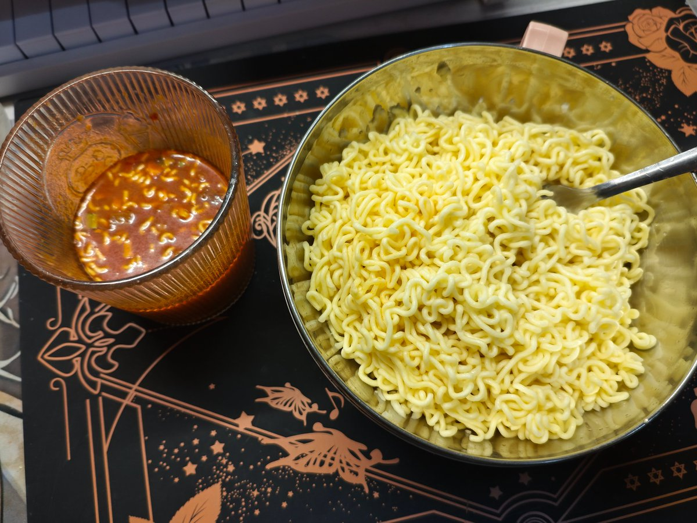

小荒荒荒荒
@NewYear_NewYear
具体方法主要分三步，先分别在面饼容器和料包容器分别加热水。再去除面饼容器内部的多余水溶液，只保留软化面条，同时搅动料包容器内的液体直到均匀。最后两个混合均匀后即可食用。
使用该方法可以产出一份具有很多酱汁、拥有香香的味道的番茄鸡蛋牛肉拌面。同时还可以改善或解决先前提出的若干问题

小荒荒荒荒
@NewYear_NewYear
对康师傅的番茄鸡蛋牛肉面的吃法新思考——一种适合口味偏重人士的食用方法
传统吃法总是会存在酱包化不开、面条没入味、泡久了面条浮涨等问题。所以本文结合目前已经有的材料通过引入第二个容器的方法，创新性的将泡面改为拌面。 https://t.co/yQLwpbtXnZ